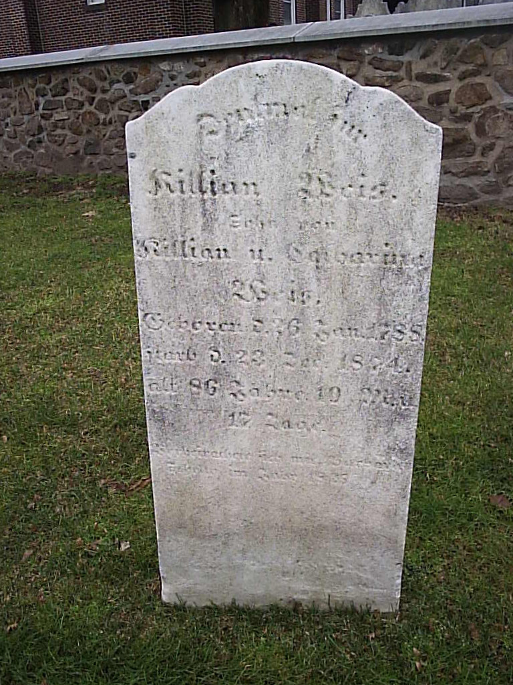
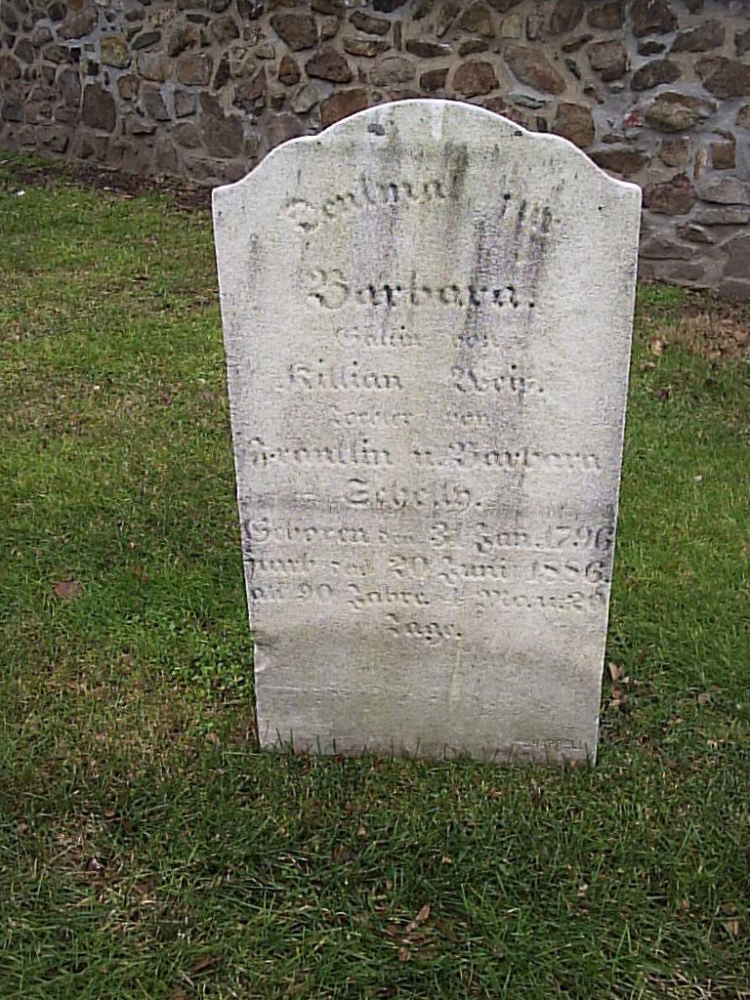

Killian Landis WEISS
born 26 Jan 1788
died 23 Dec 1874
Barbara Yoder SHELLY
born 31 Jan 1796
died 20 Jun 1886
(great-great-grandparents of Titus Hartman)
married XX
Jacob Shelly WEISS
born 09 Feb 1825
died 10 Aug 1899
Catherine Shelly WEISS
born 1826
died 1849
Franklin Shelly WEISS
born 02 Mar 1826
died 19 Jan 1888
Henry Shelly WEISS
born 20 Sep 1827
died 24 Jun 1908
Killian Shelly WEISS
born 1828
died 1904
Joel Shelly WEISS
born 1830
died XX
Johannes (John) Shelly WEISS
born 24 Dec 1832
died 28 Feb 1899
Elizabeth Shelly WEISS
born 17 Aug 1834
died 26 Sep 1908
Samuel Shelly WEISS
born 15 Sep 1836
died 19 Apr 1915
Killian and Barbara are buried together at Boyertown Mennonite Cemetery in Boyertown, PA.
 